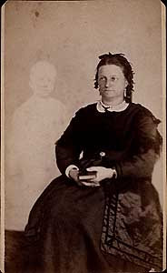

Wednesday, February the 23rd, 2005
back to: title, date or indexes
On Monday, in the item entitled Fifty Years Ago, we mentioned Dorothy Sleet's fictional detective Rex Shroud, Orrery Sleuth. Sadly, it has come to our attention that not a single one of these tremendously exciting novels is still in print. This is all the more puzzling when one learns that the Broadway show based on the books is breaking box office records.
The plot of Orrery Sleuth! : The Musical cobbles together incidents from the first three novels with certain episodes from Dorothy Sleet's life. Like Agatha Christie, she once disappeared for a few weeks and was found in a seaside boarding-house. Like Adolf Hitler, she took seven sugars in her tea. Like the Wild Boy of Aveyron, she shrieked when her potatoes were taken away. Like James Joyce, she hid underneath tables during thunderstorms. Like William Ewart Gladstone, she adduced from the works of Homer that all Ancient Greeks were colour blind. Like Pope Pius XII, she gave lectures on gas central heating. Like Hedy Lamarr, she made a decisive scientific contribution that helped to win the Second World War. Like Alfred Hitchcock, she was frightened of eggs.

Dorothy Sleet & her phantom familiar
It is this last point that explains, perhaps, the scene in Act Two of the musical, where Rex Shroud, the Orrery Sleuth, finds himself trapped in a little shed, completely surrounded by hens. The menacing atmosphere is heightened by the music, a slow, brooding theme on woodwinds, accompanied by the chorus delivering a dirge about feathers. Brilliantly, the scene segues into a tap-dancing extravaganza and the show's hit number I Am An Orrery Sleuth Encircled By Hens, which is of course a nod to chapter sixteen of Antarctic Death Paste, the second novel in the series.
Tickets for the show are hard to get, and change hands for ridiculous prices on the OrrerySleuthBay website.
Animal rights activists should note that none of the hens which appear in the musical is a real bird. Some of them are electronic robots, some are made of plasticine, and the ones nearest the front of the stage are constructs of sponge and wire and string.
Hooting Yard on the Air, February the 23rd, 2005 : “Total Eclipse” (starts around 17:25)
Hooting Yard on the Air, November the 1st, 2006 : “Sieves and Basins” (starts around 28:22)